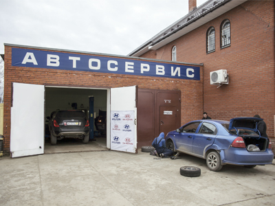
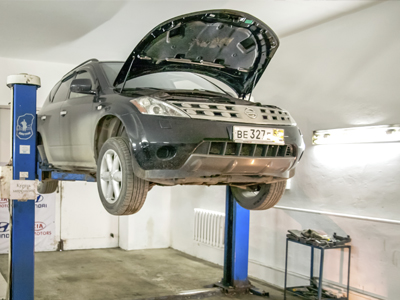
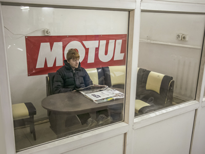
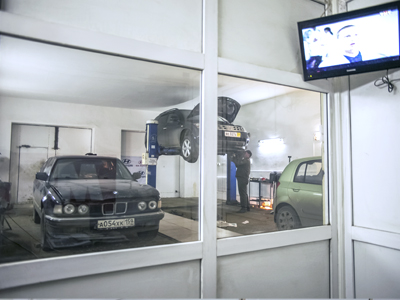
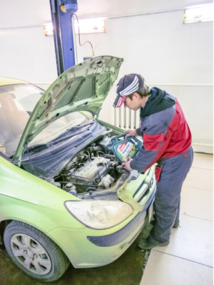
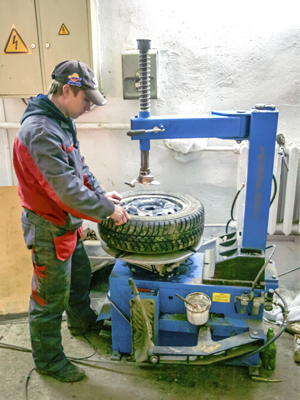

Наш центр технического обслуживания специализируется на ремонте автомобилей kia, hyundai и ВАЗ, но также оказываем услуги владельцам других марок автомобилей. Также Вы прямо в автосервисе можете заказать все необходимые запчасти – как оригинальные, так и аналоги высокого качества. Для некоторых марок Hyundai (такие как Getz, Accent, Elantra и другие) и Kia (Ceed, Rio и другие) запчасти имеются в наличии.

Расскажем подробнее о технологиях диагностики и ремонта автомобилей Hyundai и KIA в нашем автосервисе. После того, как Вы прибыли к нам в автосервис, наш менеджер выслушает Вас, и разместит Ваш автомобиль на пост ремонта. Специалист, направленный на выполнение ремонтных работ, не зависимо от того какой ремонт он должен выполнить, в обязательном порядке осмотрит детали подвески и убедится в безопасности и надежности всех основных узлов Вашего автомобиля. За работой специалистов следит опытный, высококвалифицированный мастер. Он проверяет соблюдение технологии ремонта на всех этапах работы, а так же соответствие деталей, используемых в ремонте, конкретной модели автомобиля. Система организации ремонта, контроля и широкие гарантийные обязательства, используемые в нашем автосервисе, обеспечивают высочайшее качество всех выполняемых работ.
При необходимости приобретения запасных частей к Вашему автомобилю KIA мы можем связаться с магазинами автозапчастей и организовать доставку.
Мы даем гарантию 6 месяцев на большинство выполняемых ремонтных работ, и в случае Вашего обращения по гарантийному случаю, мы незамедлительно примем Вас и начнем поиск и исправление недостатков.

Во время обслуживания Вашего автомобиля в нашем сервисе Вы можете посетить нашу зону отдыха, где вы можете посидеть с ноутбуком в спокойной обстановке, сделать важные звонки или просто выпить чашечку кофе. С зоны отдыха можно также наблюдать за процессом работы механиков.
Также имеете возможность лично присутствовать при проведении работ с вашим автомобиля, что предоставит Вам дополнительную гарантию нашей работы, тем более, кому, как не «доктору» Вашего авто стоит задавать интересующие вопросы по нему!
Наши основные клиенты – это владельцы автомобилей kia и hyundai, но это не мешает нам предоставлять качественные услуги по диагностике, ремонту и профилактике автомобилям любой другой марки.
К нам вы можете обратиться за тем, чтобы установить дополнительное оборудование:

Несмотря на широчайший спектр услуг, которые предоставляет наш автосервис, мы хотим выделить несколько пунктов, благодаря которым мы стали надежными партнерами не только для многих автолюбителей, но и для профессионалов, а также подчеркнуть, почему мы будем полезны для Вас: